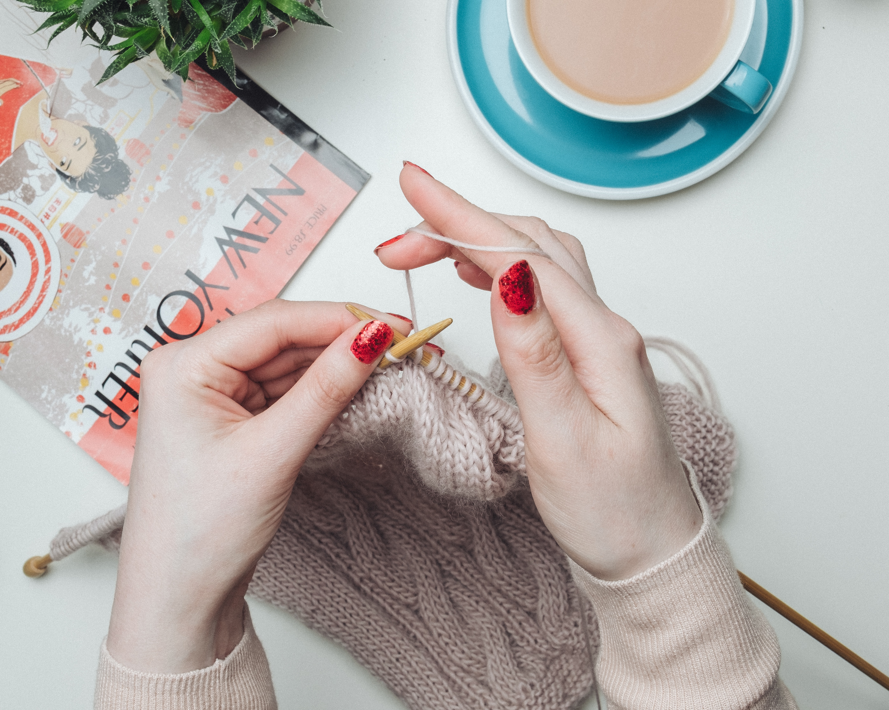

Have Yarn, Will Knit

Knit Happens
Runner David Babcock broke a Guinness World Record for his time in the Kansas City marathon: five hours, 48 minutes, and 27 seconds. If you’re wondering what’s so special about his time, he managed to run the entire race while knitting a scarf that measured over 12 feet long!( Brown Sheep Co)
In 1527, the first knitting union was established in Paris, France — and no women were allowed to join. After the knitting machine was invented in the late 1500s, knitting by hand became a useful hobby, rather than a necessity. Since it transformed into a leisurely craft, this may explain why it was no longer considered a male task. ( Brown Sheep Co)
The world’s fastest knitter is Miriam Tegels of the Netherlands. She can hand knit 118 stitches in one minute. Did you know that knitting acts as a natural antidepressant and can help ease anxiety, depression, and chronic pain. It can also protect the brain from aging.(Fact Retriever)
Yarn

Yarn is a long, continuous length of fibers that have been spun or felted together. Yarn is used to make cloth by knitting, crocheting or weaving. Yarn is sold in the shape called a skein to prevent the yarn from becoming tangled or knotted. Yarns come in many thicknesses or weights from fine to thick: lace, fingering, sock, sport, double-knit (or DK), worsted, aran, bulky, and super-bulky.( Kiddle Encylodeia)
The most commonly used yarn color types are those with a single uniform hue. However, there are also other color types available such as: heathered or tweed, ombre, multicolored, self-striping, marled which is yarn that is made from strands of different-colored yarn twisted together.(American Yarns
The term "worsted" is derived from the town of Worstead, England, a manufacturing center for yarns and cloth during 1250-1300; worsted weight is one of the most common weights in yarn.(Darn Good Yarn)